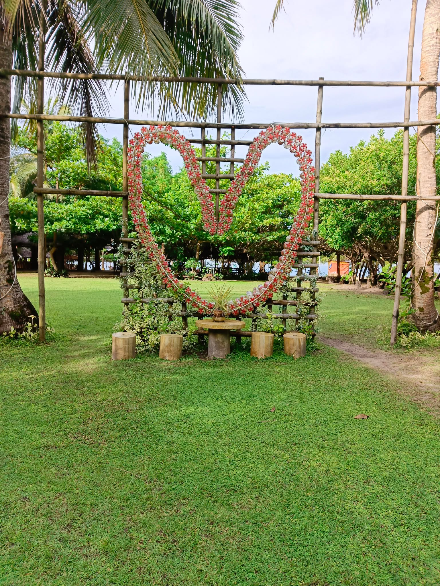

Coca Beach is one of the hidden coastal treasures of Barangay Sapao in Guiuan, Eastern Samar. Tucked away from the bustling town proper, this beach offers a peaceful and almost untouched seaside experience that appeals to travelers seeking relaxation and natural beauty. It is not widely known outside the local community, which helps preserve its quiet charm and uncrowded shores.
The journey to Coca Beach involves a walk through a simple, tree-lined trail that suddenly opens up to the vast and breathtaking view of the Pacific Ocean. Once there, visitors are welcomed by open-air cottages with nipa and bamboo architecture, offering a true taste of the laid-back Eastern Visayan lifestyle. These cottages are available for rent at budget-friendly rates, ranging from ₱500 to ₱1,000, depending on size and features, making the beach accessible to students, families, and local tourists alike.
"Coca" comes from the first two letters of Cornelio and Caridad Sison's names — the couple whose private family retreat became this beach.
According to the granddaughter of the owner of the beach resort, the name of the beach was taken from her grandfather and grandmother's names — Cornelio Sison and Caridad Sison — hence "COCA," taken from the first two letters of each name. According to her, Coca was never actually planned as a business. Before the pandemic in 2019, it was simply private family property — a quiet place to unwind together. During the pandemic, the land was cleared so the family would have somewhere they could take off their masks and gather safely. Later, the family opened it to the public, and it has since become well known locally for family outings and other recreational activities.

Although Coca Beach is not a war site or religious landmark, its peacefulness and simplicity reflect the lifestyle and values of the Guiuananons — resilience, hospitality, and harmony with nature. With its blend of scenic landscapes, cultural touchstones, and accessibility, Coca Beach serves not just as a local hangout, but as a meaningful destination for those who want to experience Samar's understated beauty and community warmth.